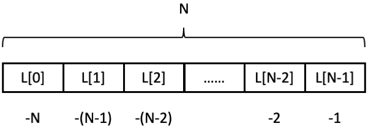
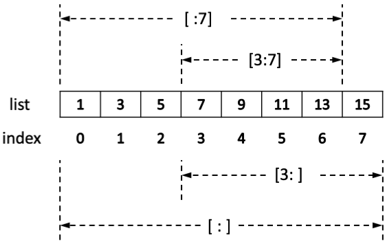
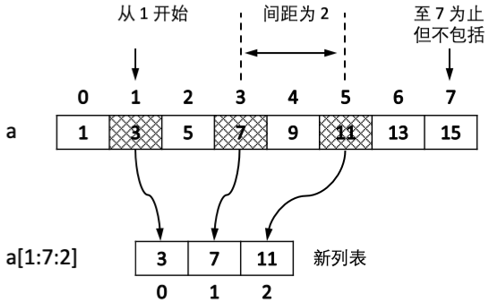
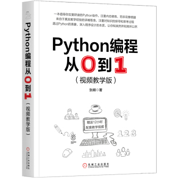

Python为序列类型（sequence types）[1]提供了独特的索引（indexing）和切片（slicing）机制以访问序列的某个元素或某一部分。
[1] 如list, tuple, range, str, bytes, bytearray, memoryview
1．索引
在前文中已经展示过使用索引访问字符串、列表、元组的方法。像大多数其他编程语言一样，Python的索引从0开始（长度为N的序列，索引序号从0到N-1。除此之外，Python通过引入负数索引的方法，使得从尾部开始访问序列的写法很简洁。最后一个元素的索引为-1，倒数第二个索引为-2，依次类推，直至第一个元素的索引为-n。访问序列的结尾元素只需要x[-1]即可，无需使用复杂的表达式如x[len(x)-1]。如图 1.5所示。

图 1.5 索引
2．切片
切片运算从序列类型对象中选取一系列元素，得到新的对象。以列表为例演示如图 1.6所示的切片操作。

图 1.6 列表切片
>>> a = [1, 3, 5, 7, 9, 11, 13, 15]
>>> a[3:7] # [起始元素:结束元素+1]
[7, 9, 11, 13]
>>> a[:7] # 省略起始索引，从头开始算起
[1, 3, 5, 7, 9, 11, 13]
>>> a[3:] # 省略结尾索引，算至末尾
[7, 9, 11, 13, 15]
>>> a[:]
[1, 3, 5, 7, 9, 11, 13, 15]
在切片运算中增加第三个参数就可以按间隔挑选元素。如图 1.7所示。

图 1.7 间隔切片
>>> a = [1, 3, 5, 7, 9, 11, 13, 15]
>>> a[1:7:2]
[3, 7, 11]
当步长为负时，可以实现“从后至前”的切片：
>>> a[::-1] # 从尾至头，步长为-1
[15, 13, 11, 9, 7, 5, 3, 1]
切片同样适用于其他序列类型：
>>> t = (1, 3, 5, 7, 9, 11, 13, 15)
>>> t[2:7:2] # 元组
(5, 9, 13)
>>> s = 'abcdefgh'
>>> s[::3] # 字符串
'adg'
除去列表、元组、字符串外，Python还有用于生成等差数列的range类型，常用其控制for循环，将在1.5.4 节讲述。
这是一本很有趣很有趣的Python入门书，墙裂推荐。
